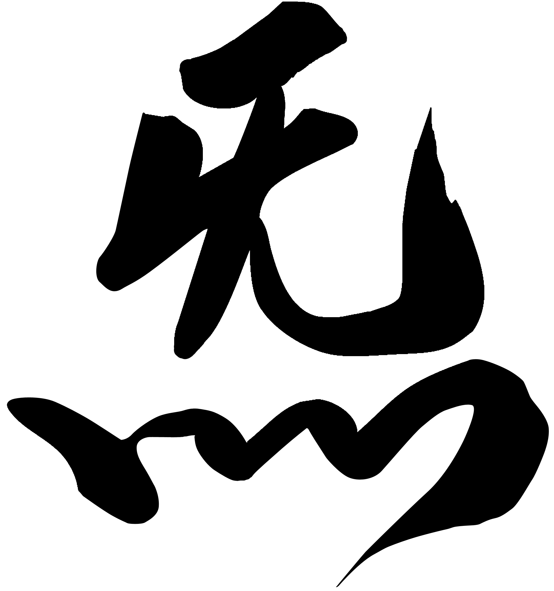
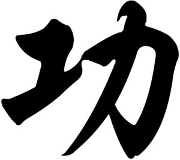
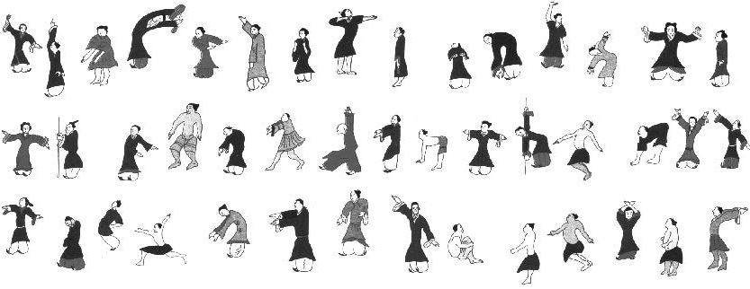
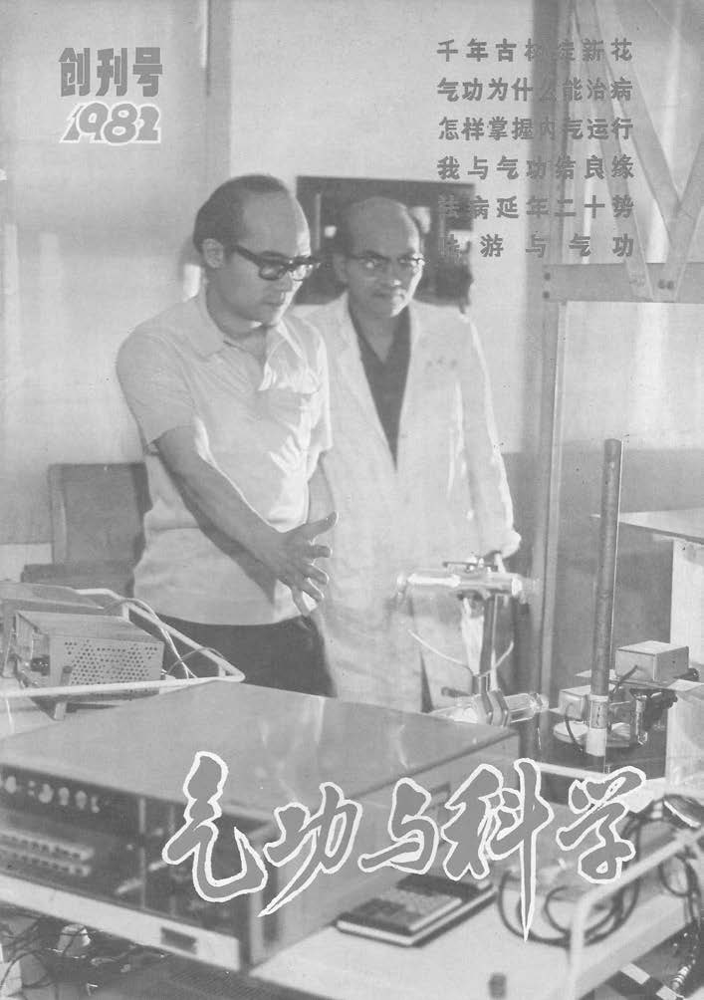
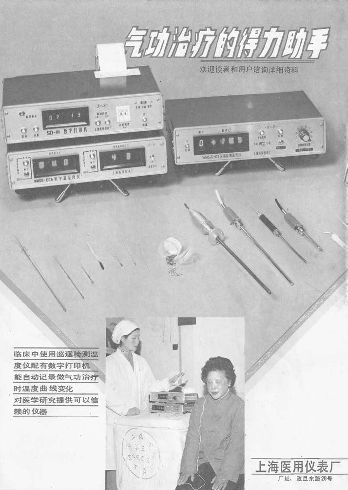

气功的历史
关于气功
我们钦佩这样的人：他们精力充沛地度过一生，以自信与从容应对生活中的每一个挑战或艰难阶段；凭借其非凡的个人魅力与乐观精神，他们能 为周围的人带去喜悦与积极的生活感受。
这些人之所以能拥有这一切，其奥秘在于：生命原力—— “气”——在他们的身心之中正自由顺畅地流淌。
根据拥有数千年历史的中国古老智慧，宇宙能量“气”赋予了植物、万物乃至人类以生命活力。自我们呱呱坠地之时起，体内便蕴藏着一股“气” 的潜能，若无损耗，这股潜能本足以维持约120年的生命。然而，我们必须悉心呵护这得之不易的先天之气。现实生活中的种种境遇往往并非尽 善尽美——我们承受着压力，遭受环境污染的侵袭，或因受伤而损耗元气；这些因素不仅会削减体内的“气”，更会引发气机阻滞，从而阻碍 “气”的自由运行。此类气机阻滞极易引发身心层面的病患——值得注意的是，传统中医理论并不将这两种病症割裂开来，因为它始终将人视为 一个不可分割的整体。
我们完全有能力去呵护、滋养体内的“气”，并确保其始终保持自由顺畅的流淌状态。若想达成这一目标，定期习练气功将是极其行之有效的方 法；而在习练气功的同时，我们亦能借此修养身心，培植德行。
气与功

“气”一词常被译作“呼吸”或“空气”。然而，其真正的内涵远比这些表层含义要深邃与广博得多。“气”是中国哲学与传统中医理论中一个 至关重要的核心概念。它既代表着个体生命所独有的原动力，亦象征着整个宇宙所蕴含的生命能量。

“功”意指（精湛的）技艺或功夫，它与个人的能力及技能紧密相关。因此，“气功”一词可被理解为对“气”所进行的持之以恒的修炼与磨砺； 若从更为高深的层面来解读，它则代表着一种能够驾驭并掌控“气”的能力——借此能力，习练者方能实现身心康健与自我疗愈。
气功 —— 滋养身心健康
正宗的气功源自民间，历经数代传承，与中国的文化传统紧密相连。
例如，人们可以在传奇武术以及佛道修行者的精神修持中发现其踪迹。 然而，气功最重要的作用长期以来一直体现在强身健体与医疗康复方面。 某些气功流派的历史据信可追溯至五千多年前。 这些传统功法中的许多要素，至今仍是中医体系不可或缺的一部分。 若练习得当，气功能够促成身心的深度放松。 它有助于延缓衰老，并显著提升个人的生命活力与机能表现。 坚持练习能增强内在力量，且成效往往在短时间内即可显现。 实践证明，气功在疾病预防、（自我）疗愈及辅助治疗方面成效显著。 在许多情况下，它不仅有助于缓解病痛、战胜疾病，还能巩固康复成果。 对于那些西医目前尚无理想疗法的慢性病症，气功往往也能取得良好的疗效。
气功重在实践。它是一种基于将人与其环境视为一个整体这一观念的方法。通过积极的训练来感知身心的内在状态，气功能够促进人体能力的转化、改善与提升。由此，人们得以开发出智慧、才智等自然潜能以及其他与生俱来的天赋。 气功的调和功效源于旨在调节身、息、心的各类练习。这些方法可归纳为“静功”与“动功”两大类。静功既可站立、坐姿，也可卧姿进行。在保持和谐呼吸与心念宁静的同时，其显著特征是放松地维持特定的规范姿势。与此同时，体内的精、气、血运行得以激活；因此，这种练习形式呈现出“外静内动”的特点。 在动功练习中，注意力完全集中于身体可见的动作之上。配合与动作相应的呼吸及心念的释放，这些练习能调和并优化体内精、气、血的流动与循环。动功因而呈现出“外动内静”的特点。 在实际操作中，根据具体流派的不同，这两种形式既可结合练习，也可作为独立的方法进行。结合的形式被称为“静动功”；该类别涵盖了先后融合了静止与动态要素的练习。所有形式都秉持将人视为整体的观念，并重视人与自然力量之间的紧密联系。
什么是气功？
任何想要探索“气功”这一概念并理解其多重含义的人，都可以从剖析“气”与“功”这两个汉字入手。
“气”（Qi）是一个内涵极其丰富的汉字。它常被译为“空气”或“呼吸”，这容易让人误以为气功仅仅是一系列呼吸练习。然而，它的意义远为深邃且宏大：“气”是中国哲学与医学中的核心概念，往往难以用单一词汇对应，而需通过描述性短语来诠释。它指代一种本源性的存在，既是个体的生命能量，也是宇宙的能量——是我们存在的根本基石。
在中国文化中，演化出了两个不同的汉字来分别代表“先天之气”和“后天之气”。表示“先天之气”的传统汉字由两部分构成（见图1）。底部的四道向上延伸的笔画象征着熊熊燃烧、充满活力的火焰；上方则是一个大致呈方形的带柄水壶。该字所蕴含的意象十分直观：壶中的水在火焰的热力下逐渐升温。水温越高，水分子的活动就越剧烈。最终，能量转化为可见的形态：气泡从壶底升起，细微的水蒸气袅袅上升。因此，这个字象征着内在能量强大而积极的转化——这一过程正是通过坚持练习气功而激发的。能量是我们迈出的每一步与产生的每一个念头的基石；当能量充沛时，我们的步伐与思维也会充满力量。
“功”（Gong）一词蕴含着丰富的含义。 在中国，它被用来指代各种形式的艺术。 无论是美术、表演艺术、工艺美术， 还是工匠的技艺——各种创造性技能 都体现在这个字中，彰显了创作者的精湛造诣。在气功中， “功”字是“功夫”（Gongfu）的简称。在这里，它代表着 为掌握某项特定技能所投入的时间、努力与精力。 “功”字由两个部分构成 （图2）。左侧部分代表“工作”的概念。 它源自更为复杂的“天”字符号。 该字右侧的部分象征着力量、权能与技艺。 它象征着一个人全心全意地努力去移动 重物。从视觉上看，可以将这个字想象成 一个人正运用体力将铁锹插入大地。当它与 前文所述的左侧部分结合时，从意象上讲， 便构成了一个代表“通过付出努力而创造出的精湛技艺”的字。 一个人在工作或任务中投入的爱、奉献与谦逊越多， 且随着岁月积累的经验越丰富， 最终成果的质量也就越高。唯有那些 耐心且持之以恒地工作的人，才能领悟事物的真谛。 这一原则同样适用于气功练习：坚持不懈的练习者 将保持身心的持久健康，维系生命能量， 陶冶情操，并提升自身能力。
正如其书法形态所暗示的那样，气功是一门 任何人都可以学习的艺术。无需特殊的技能或特定的身体条件， 即可获得气功的益处。练习方式可以根据 习练者的体质与需求进行调整。因此，无论是儿童还是成人， 无论健康与否，都能从中获益。即便是那些 行动能力暂时或永久受限的人，也能从练习中受益。 取得进步与成功的关键因素，唯有规律性、勤勉 以及对练习持有的积极态度。
气功的起源
关于气功起源的确切时间，目前只能通过推测来判定。然而，有证据表明，早在1万年前，中国就已存在一种部落仪式舞蹈；参与者频繁重复这种舞蹈，能获得积极的疗愈效果。这套被称为“大舞”（Da-Wu）的动作序列，可被视为气功最古老的源头之一。现有理论认为，这种舞蹈由部落萨满（巫师）主持，因为只有他们才被允许与“天”和“地”的力量沟通，从而造福于“人”。即便在古代，天、地、人三者的和谐也被视为健康生活的必要前提。这些仪式舞蹈背后的理念，很可能源于一种信念：即特定的姿势与动作能让人吸收部分宇宙能量，并将其转化为维持自身生命的动力。因此，气功建立在对自然界以及人体及其对各种环境影响之反应的精确观察之上。
传说生活于公元前2700年左右中国北方的黄帝（Huang Di），被视为促进健康与长寿之法的鼻祖。据传，他享年111岁，并通过冥想与呼吸练习实现了精神上的永生。他的见解在公元前3世纪被整理成书，即《黄帝内经》（Huang Di Nei Jing）。这些记载至今仍是中医（TCM）领域的经典文献，并对气功的发展产生了深远影响。
关于类似气功的特定锻炼方式的最早文字记载，可追溯至约四千年前。这些记载描述了中国北方黄河流域居民所习练的一种舞蹈。由于当地气候潮湿且洪涝频发，居民常受肌肉与关节病痛的困扰。为缓解这些病症，他们结合呼吸练习，模仿动物的动作进行身体锻炼。通过效仿这些健康且充满活力的生物，他们力求祛除体内湿气，促进气血循环，并确保“气”在全身通畅运行。其目的在于增强机体防御能力与生命能量，从而预防潜在的健康问题，并加速病后康复。 自那些早期的仪式性舞蹈及其针对性的预防与疗愈应用出现以来，气功在数千年的演变中分化出了众多不同的流派。然而，无论何种风格或流派，其核心宗旨与益处至今未变：即促进健康、延年益寿，并为心智与精神层面的提升创造契机。
气功是中国传统的强身和调心方法。它有四五千年的历史，在古代被称为“导引”、“吐纳”、“行气”或“按跷”。它的发展经过了漫长的过程。 远古与先秦时期（起源与雏形）原始保健：远古人类通过伸展身体和调整呼吸来减轻疲劳，这是气功的最早来源。 文字记载：春秋战国时期的《庄子》中出现了“吹呴呼吸、吐故纳新，熊经鸟伸”的记载，这是早期的导引和吐纳方法。 战国末期的《行气玉佩铭》是现存较早的行气文字资料。秦汉至隋唐时期（理论与流派形成）医学结合：《黄帝内经》奠定了中医气功的理论基础，把气功和经络、治疗疾病结合起来。 出土文物：湖南长沙马王堆汉墓出土的帛画《导引图》，展示了汉代人利用肢体动作和呼吸配合来治病的图像。 多元发展：这一时期，气功融入了道家、儒家、医家和武术之中，形成了不同的修炼与养生分支。宋元至民国时期（内丹与民间流传）名称出现：“气功”一词最早见于晋代道士许逊的《净明宗教录》中，但当时只是一个局部的修炼术语。 内丹学兴起：宋元以后，道家内丹术大盛，强调性命双修，丰富了气功的静功内涵。各门派武术也大量吸收气功来增强发劲与抗击打能力。 现代发展（命名普及与规范）“气功”普及：1950年代，中国出版了《气功疗法实践》等书，“气功”一词开始被广泛使用并走向社会。 科学管理：改革开放后中国曾出现气功热，随后国家体育总局对其进行了规范与科学研究，推广了健身气功（如八段锦、易筋经等）， 使其成为现代大众健康活动。
帝国时期的气功
在中国帝国时期，气功的发展历程既有起伏，又保持了连贯性。虽然在某些朝代它曾盛极一时并受到皇室贵族的推崇，但在其他时期，其发展则多处于不为大众所知的状态。气功功法及其背后的哲学理论往往通过口传心授的方式流传，鲜有文字记载。因此，在很长一段时间内，掌握这些知识的仅限于极少数的入门者。尽管如此，气功的传承始终代代相继，人们对其潜能及实际应用价值的理解也在不断加深。
商周时期（公元前1600年—公元前221年）
关于气功修习的记载最早可追溯至商周时期。那个时代最具传奇色彩的人物之一便是彭祖；传说他之所以能享寿八百岁，全因坚持修习特定的功法。据说他每日凌晨三点即起，静坐冥想直至黎明。后世公认“导引”之法即由他所创。“导引”是气功的古称，指一种结合特定呼吸技巧，并包含肢体动作与意识引导“气”的修习方式。关于皇室圈内气功实践的早期记载，见于对西周时期一位名为王子乔（Wang Qiqiao）的王子的描述；据载，他曾修习静坐冥想与专门的呼吸吐纳之术。由此推断，至迟在这一时期，气功已成为宫廷日常生活中的重要组成部分。 同样是在西周时期，《易经》（在西方被称为 *Book of Changes*）作为中国哲学界最重要的典籍之一问世。时至今日，该书所阐述的普遍原理，不仅对理解人生具有深刻启示，也为气功的理论与实践提供了宝贵的指导。 随着周朝走向衰落，中国进入了一个政治与社会动荡剧烈的时期——即战国时代。尽管这一时期战乱频仍，却被视为思想文化遗产极其丰厚的时代，其时间跨度在秦汉王朝之前。当时涌现了老子、孔子等众多思想家；他们的思想与哲学思考对整个中国社会产生了深远影响，进而也深刻影响了气功的发展。这一早期时代留下的宝贵遗产之一，便是将口耳相传的传统汇编成文，并载入中国最重要的几部医学典籍之中。
秦汉时期（公元前221年–公元220年）
公元前221年，秦国征服了广阔的疆域， 将战国诸侯统一为一个大一统帝国。 当时，许多人迷信所谓的“外丹术”， 试图利用矿物、重金属， 甚至是有毒草药， 来炼制能治病延年、甚至长生不老的灵丹妙药。 这些被视为具有回春功效的灵药， 导致许多皇室成员因此早逝， 这种现象甚至延续到了汉代。 然而，在追求灵丹妙药的同时， 作为“内丹术”的一种形式，气功的传统 也得以持续传承。这一点在当时的 经典文献中得到了体现。其中包括《养生道》—— 即“养生之道”——它首次全面系统地 阐述了一套受道家思想影响的养生体系。 汉代末年，名医华佗将传统气功锻炼加以系统化， 并将其作为一种针对性的疗法用于治病。 这套体系被称为“五禽戏”（Wu Qin Xi）， 是一套模仿虎、鹿、熊、猿、鹤 五种动物动作的健身功法； 时至今日，它依然是人们强身健体、 维护健康的重要方式。 湖南马王堆汉墓的考古发掘成果 进一步印证了气功锻炼在当时已广为流行。 出土文物中包括绘有“导引”动作图解的卷轴， 以及对人体能量系统的详细描绘。 从这些文献中可以推断，早在约两千年前， 通过气功修炼内在能量便已具有极高的重要性（图3）。

三国与南北朝时期（公元220年至581年）
三国与南北朝时期伴随着政治与社会的动荡。然而，这一时期也为气功的进一步发展提供了重要动力，这主要归功于“三丹田”理论的提出。位于脑部、胸部中央及下腹部的这三个区域，自此被视为能量转化的重要中心。 公元4世纪初，道家哲学家兼气功大师“抱朴子”首次明确区分了肉体长寿与精神长生。此前，许多修行者坚信通过适当的修炼能实现肉体永生，而此时的教导则指出，唯有精神长生才是可能的。根据抱朴子的学说，气功修炼既是世俗生活的基石，也是通往另一世界精神永生境界的必要基础。
南梁时期（公元502年至557年），一位名叫菩提达摩（Bodhidharma）的印度僧人来到了中国北方的著名寺院——少林寺。这位被中国人称为“达摩”的僧人，据传曾在偏僻的石洞中独自面壁静坐长达九年。在结束了长期的冥想修行后，他开始向少林寺的僧众传授一套特殊的身体锻炼法，以此作为更高层次精神修行的基础；与此同时，他也教授中国武术家通过冥想来调动心智力量以进行格斗。达摩是首位将心智修炼与武术融为一体，并构建出以能量为核心的统一体系的人。他由此确立了心智提升与身体修持之间的联系，这一联系至今仍是许多气功体系的基石。此外，达摩还留下了另一项宝贵的遗产：他创立了运用内在能量的原理，这些原理最终成为了一种独特气功流派——“少林内劲一指禅”——的理论基础。不仅如此，达摩还被尊为传奇性的禅宗（Chan Buddhism）的开创者。禅宗的教义主张，觉悟与开悟不依赖于书本知识或正规教育，唯有通过心智的磨练以及对万物本性的直觉体悟，方能达成。
唐朝（618–907年）
唐朝被视为中华文明的黄金时代。在此期间，得益于皇室的直接推崇与支持，气功的发展进入了鼎盛时期，并声名远扬。许多学者撰写了关于各类功法理论与实践的著作，其中便包括名医孙思邈。他所著的《千金方》一书中，详细阐述了多种气功疗法；他不仅论述了正确呼吸对于调节人体“气”的重要性，还介绍了一种利用特定发音（治病之声）进行治疗的方法。同期的另一位名医巢元方， 在其著作《诸病源候论》中， 详细描述了二百多种通过气功锻炼来改善体内能量流动的方法， 从而达到预防疾病、缓解症状以及——在必要时—— 治愈疾患的功效。
唐代初期，人们依然深信“外丹”的潜力，认为通过人工炼制的丹药可以获得健康与长寿。然而，在820年因服用此类丹药导致皇帝早逝之后，“内丹”修炼之法逐渐兴起并占据了主导地位。气功练习及其相关的能量修炼，最终被公认为有效的养生之道。与此同时，这一时期在心智与精神领域也取得了显著进展。人们愈发重视所谓的“三宝”——即精、气、神——对于维持人体生命平衡与和谐的重要作用。此外，道教界形成了一种共识：必须先平定后天心神，方能唤醒先天元神，并将心智能量转化为纯粹的先天觉知状态。
宋代（960–1279年）与元代（1279–1368年）
宋代时期，对“气”——以及由此延伸出的气功——的研究进一步深入。在朝廷高层的支持下，人们开展了广泛的实验与观察，旨在探究“气”对于生命本身以及疾病防治的核心意义。1026年，医家王惟一研制出了一具“针灸铜人”模型，上面标示了人体关键的经络走向与穴位位置。基于对体内气之运行及其养生价值的新认识，各种激活并增强这种生命能量的方法广为流传。时至今日，气功与针灸仍被视为其中最重要的两种方法。
12世纪南宋末年，中国将领岳飞创编了一套练兵功法——即如今广为人知的“八段锦”。这套功法旨在激活肌肉、柔韧筋骨、舒活关节，并实现身心和谐。随着时间的推移，原始的“八段锦”衍生出了多种侧重点各异的变体。早期的形式通常充满力量感与尚武精神，而现代版本则更强调柔和与放松。
明清时期（1368–1911年）
明清时期是气功发展与巩固的重要阶段。气功在预防保健领域的重要性日益凸显，并演变为一种关键的医疗手段。在武术界，气功也受到越来越多的关注，这与当时武术风格从刚猛的“外家”向柔和的“内家”逐渐转变的趋势相契合。这一时期涌现了包括八卦拳在内的多种拳法，其中八卦拳被视为与气功有着直接渊源的武术流派。在气功修炼本身，道家、儒家与佛家传统之间的界限也开始变得模糊。当时的宗师们逐渐褪去了气功身上神秘的面纱，鼓励习练者通过练习获得亲身体悟。越来越多的人得以接触到那些曾长期秘藏于寺院与宫廷之中的功法，并将其融入到日常生活中。
1912年至今气功的发展
自1912年帝制终结以来，气功的发展历程可谓跌宕起伏。尽管武术和寺院修行体系中的气功形式在初期基本保持不变，但在过去的一个世纪里，气功在医疗应用方面却经历了巨大的变革。特别是现代研究日益浓厚的兴趣，极大地推动了气功的进一步发展与传播。然而与此同时，传入中国的西医体系也曾一度对这种传统的防治与疗愈方法构成近乎毁灭性的威胁。这两种医疗体系之间的争论在1929年达到顶峰，其激烈程度此后再未重现。当时，一些受过西医教育的中国医务人员要求将所有形式的中医视为迷信并立即予以取缔。幸亏许多政府官员自身曾受益于中医和气功的有效治疗，才避免了更糟糕局面的发生。1929年3月17日，一项法律获得通过，为传统医学从业者继续行医提供了必要的法律保障。
中华人民共和国成立后——特别是在“文化大革命”期间——激进势力曾一度威胁要废除传统疗法。然而，一些高层政治家凭借自身的亲身体验，力主保留中医和气功。在此背景下，据说毛泽东曾指出，中华文明对世界最大的贡献在于中餐与中医。事实上，时至今日，仍有不少政府要员求助于气功大师进行调理；尽管他们肩负重任且生活方式往往十分艰辛，但大多数人都能得享高寿。正因如此，尽管历经种种非议与攻击，气功依然得以传承至今。 1955年，中国首家专门从事气功疗法的机构宣告成立。该机构针对患者的具体健康状况，运用量身定制的气功疗法治疗各类病症，并取得了显著疗效。鉴于疗效卓著，许多城市随即开设了培训课程，旨在规模化培养具备资质的气功治疗师，以充实全国各地医院的相关医疗力量。随后，各类机构（尤以北京和上海为中心）对气功疗法的机理展开了深入研究。围绕气功在疾病预防与治疗方面的实践应用及理论基础，专业领域的交流日益频繁深入。随着时间的推移，大量相关教材、文章及刊物相继问世，在专业人士与普通大众中引发了广泛关注。自1980年起，气功锻炼已成为中国数以百万计民众个人健康管理的重要组成部分。某些功法——例如“少林内劲一指禅”——在当时更获得了国家层面的特别支持，以助力其在维护公众健康方面发挥作用。气功在中国依然占据着举足轻重的地位。它在疾病预防与治疗领域的价值已获得广泛认可，其影响力早已跨越国界，并正稳步迈向成为一种备受推崇的全球性替代疗法。
气功的未来
气功具有维护身心健康、有效预防疾病，以及长期缓解甚至治愈现有病症的潜力。 正因如此，其未来的主要应用领域将继续集中在预防保健与治疗方面。 气功带来的健康益处可归类为“能量医学”——这一领域已被一些人视为未来的疗愈艺术。 气功提供了一种简单易行的方法，能够增强人体与生俱来的自我保健能力。鉴于个人压力增大、社会挑战增多以及环境变化加剧，这些功效的巨大价值尤为值得重申；它们能帮助人们以更灵活的心态和内心的宁静来应对日常生活。在治疗与康复领域，气功有望日益融入现有的治疗方案之中，并极大地丰富其内涵。气功在成功应对慢性病乃至重症方面的潜力，已在西方世界获得广泛认可。在治疗慢性肾炎、心脏病、多发性硬化症及中风后遗症等病症方面，气功已享有良好的声誉。随着研究的深入，预计在这些病症及其他多种疾病的治疗上，气功将展现出更多积极的成效。
除了上述方面外，还有一个因素使得气功在医疗保健和治疗领域的应用对未来具有重要意义：气功具有成本效益。
许多国家正日益重视预防性健康项目。 与其支付昂贵的治疗费用， 它们转而积极推广——甚至在某些情况下提供资金支持——气功课程， 旨在缓解压力，克服心血管或呼吸系统问题， 以及应对其他常被归类为“生活方式病”的疾患。 气功在康复治疗中也长期发挥着重要作用。 越来越多的诊所和康复中心提供 相关的培训课程并教授练习方法， 使患者随后能轻松地将其融入日常居家生活中。 作为一种既传统又具有前瞻性的方法， 气功能够产生广泛的积极效应， 无论是个体独立练习，还是与其他治疗手段结合使用。 因此，在考量其未来潜力时， 必然会关注如何将其与其他疗法相结合， 从而造福患者。例如，将常规医疗手段与气功结合使用， 结果显示，在许多情况下，患者的康复速度更快且效果更持久， 优于单纯采用常规治疗而不结合气功的情况。此外，实践证明， 对于许多患者而言，这种结合能显著降低药物剂量， 或优化药物的使用方式与疗效。 这些方面对于未来的发展具有多重重要意义：
- 某些药物对人体的副作用可能非常严重，甚至引发进一步的危害。尽管如此，如果出于医疗需要必须使用这些药物，练习气功往往有助于减轻这些不良副作用的严重程度。这一点同样适用于放疗、化疗以及手术带来的生理和心理后遗症。
- 全球范围内有时不加节制地使用抗生素，已被证实会导致耐药性的产生，这在一定程度上危及了未来治疗的成效。如果我们能通过练习气功等措施加强预防并减少药物使用，产生耐药性的风险自然也会随之降低。
- 无论是药物生产过程，还是药物经由人体进入自然环境后的残留物，都会给生态系统带来压力。通过练习气功减少药物使用，不仅能防范副作用和耐药性问题，还有助于保护栖息地和节约自然资源。
总而言之，我们可以对气功的未来持乐观态度。气功作为一种预防和疗愈手段，其日益增长的普及度和认可度，开启了许多几年前难以想象的可能性。然而，气功的未来潜力远不止于医疗领域。如前所述，坚持练习不仅能带来内心的宁静与包容力的提升，还能增强身心机能。通过气功对个人发展的积极影响，练习者可以逐步改善性格特质，提升道德修养，并为家庭、朋友圈乃至整个社会的和谐互动做出更多贡献。气功在促进个人成长方面的这些潜力，已得到广泛的跨学科研究证实。这些研究不仅有助于阐明气功的作用机理，还在不断拓展和优化其实际应用。
气功在西方世界的发展
气功向中国以外地区的传播，最早可追溯至唐朝（公元889年至897年）时期。早在那个年代，多种气功功法便已传入日本，并被用于疾病的预防与治疗。时至今日，气功在日本依然备受推崇，不仅用于医疗保健，还作为一种放松身心的手段广受欢迎。 欧洲关于气功的最早记载见于法国耶稣会士西博（Father Cibot）1779年的记录，该记录以《道士的“功夫”》（Notice du Cong-Fu des Bonzes Tao-sée）为题发表。尽管这部著作起到了一定的推动作用，但当时气功尚未在西方世界获得广泛认可。 自1970年以来，中国与亚洲及西方各国之间的文化交流日益频繁。这激发了国际社会对气功疗效的浓厚兴趣，从而有力地推动了气功在全球范围内的发展与科学研究。包括美国、英国、瑞士、荷兰、加拿大、巴西、新加坡、马来西亚和泰国在内的许多国家，纷纷建立了各自的研究机构。
早在1974年，医学、物理学和化学领域的知名研究人员与科学家便已开始探索与所谓“气疗”（Qi healing）相关的现象。欧美各地的众多医院和科研机构正致力于深入研究气功的作用机制及其潜在应用。例如，美国哈佛大学与上海气功研究所曾合作开展了一项关于气功治疗肺癌的研究项目。此外，在前苏联也成立了专门研究“功夫”（Gongfu）的机构——这同样是一种基于能量运用的武术与肢体运动艺术。 由于气功功效广泛，如今人们不仅在医疗保健领域，还在许多其他场合练习气功。例如，在社交与家庭生活中，气功有助于维系和谐的人际关系；在体育运动中，它能帮助增强内在力量，并缓解赛前的焦虑与紧张情绪；在商业、管理及领导力领域，它则有助于减轻压力、提升抗压能力。
在美国，甚至连宇航员也会练习气功，以此为太空任务做准备。越来越多的人开始认识到气功在促进健康及应对日常生活方面的益处。这得益于过去几十年间，许多中国气功大师在欧美各地开设了传授点，原汁原味地教授各种流派的气功功法。
气功的研究与临床应用
过去几十年间，关于气功疗法取得成功疗效的报道引发了全球公众对这一疗法的浓厚兴趣。因此，中国及许多其他国家纷纷建立了专门从事气功研究的中心和专科诊所。这些机构的研究成果与临床经验表明，气功在疾病预防和现有病症治疗方面均成效显著。实践证明，针对患者的具体病情和身体状况量身定制气功练习，不仅能获得良好的疗效，还能缩短康复时间。研究证实，气功疗法在缓解和治愈慢性病方面效果稳定且积极。相关研究特别关注了炎症、胃部问题、消化系统疾病、高血压、各类眼疾及哮喘等病症。此外，气功对呼吸系统、循环系统及神经系统也具有显著的益处。作为一种癌症辅助疗法，气功展现出了极高的价值。不仅如此，它还被成功应用于减轻分娩疼痛以及延缓早衰过程。
迄今为止，各项研究的一个核心议题在于“气”（即能量）究竟如何作用于患者的身体。科学家在研究中区分了两种治疗方式：一种由患者自行进行气功练习，另一种则由气功大师向患者发放能量（图4）。

如前所述，后者属于“能量传输”（即“发放外气”）的范畴。这种方法主要用于患者因急慢性疾病导致身体极度虚弱的情况。在此类病例中，患者的自我气功练习可辅以大师向其传输能量的过程。基于对能量传输的研究，通过跨学科协作开发出了一种“气”治疗设备，并随后在中国多家医院投入使用。该设备旨在通过电脉冲刺激经络系统，从而帮助身体机能严重受损的患者更轻松地进行气功练习。然而，该设备的成功率仅为60%，远未达到预期效果（图5）。

基于大量的实验与观察，科学界逐渐形成了一种共识：尽管“气”未必能被肉眼直接看见，但它确实存在，并可被归类为一种物质。多项研究提供了确凿证据，表明气功的功效源于可被科学测量与理解的生理过程。例如，在加拿大进行的一项涉及4000多人的临床试验显示，气功不仅能改善心理问题（如抑郁和焦虑），还能对慢性疾病产生积极影响，甚至能治愈这些疾病。研究涵盖的病症主要包括睡眠障碍、呼吸系统问题、过敏、慢性疼痛、头痛及消化系统疾病等。此外，美国哈佛大学针对气功对高血压的影响进行了研究，结果表明，无论是个人自主练习，还是由气功大师进行能量传输，都能有效降低血压。如今，许多健康机构也已证实，气功对心血管系统、消化系统以及整个肌肉骨骼系统均有积极作用。鉴于这些令人鼓舞的研究成果，一些科学家甚至认为气功是抗击癌症和艾滋病的有效手段；他们将气功练习视为治疗慢性病或通常被视为绝症的疾病的一种有效辅助疗法。尽管针对此类疾病的确切研究结果尚待进一步证实，但有一点是肯定的：气功练习是一种有益、经济且无副作用的方法，既能用于疾病预防，又能高效地支持并增强人体的自愈能力。